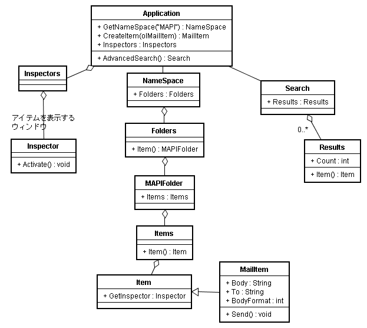
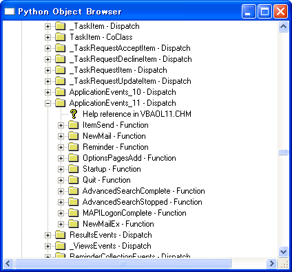

Win32OLE 活用法 【第 5 回】 Outlook
書いた人: cuzic
プロローグ
他部署からの一連のメールに対してデータベースを検索した結果を返すような 業務はだいぶ楽になっていました。
それでもこう心の中でこうつぶやいていました。 「検索したりするのはずっと快適になったんだけどなぁ」
「だけど」に隠された意味は、メールでやってきた要求から、コピーアンドペーストを 繰り返したり、一件ずつメールで送信していったりするのは面倒だということです。
Ruby と Win32OLE の活用の仕方についてまだあまり知らなかったときは、 ただ、我慢するしか方法がありませんでした。
しかし、今は我慢するのではなく、打開する手段があります。 Ruby と Win32OLE を使って。
はじめに
前回は志村さんに代わってもらって Illustrator を Win32OLE で 制御する話をお伝えしました。
今回はまた私 cuzic が筆をとって、あなたと一緒に Win32OLE の 活用のしかたを学んでいきます。
今回は、Microsoft Office の中でのメールやスケジュール等を 管理するアプリケーションソフト Outlook を Ruby で扱っていきます。
今回の記事では、Outlook の数多くある機能の中でも日常的な業務では もはや欠かせない存在となった電子メールを扱う機能について 紹介していきます。
今回の記事は次の構成になっています。
- Ruby で電子メールを扱う方法について
- Outlook のオブジェクトモデル
- Ruby から Outlook を操作する
- 受信トレイにあるメールを一覧表示する
- 特定条件に合ったメールを検索する
- メールのプロパティについて
- 新規メールの編集・送信する
では、今回も一緒に学んでいきましょう。
Ruby で電子メールを扱う方法について
今回では、Ruby で電子メールを送信・受信する方法について学びます。
Ruby で電子メールを扱う方法としては、直接 SMTP や POP などの メール送受信のプロトコルを扱う方法が、一番よく使われている のではないでしょうか。 Net::SMTP や Net::POP といったライブラリは、Ruby に標準添付 されています。 これらのライブラリは Unix でも Windows でも同じように扱え便利です。 さらに TMail のようなライブラリを使えば、メールを非常に抽象的に 扱え、電子メールクライアントを Ruby で書き上げることもできるかと 思います。
この記事では、Net::POP や Net::SMTP については説明せず、Outlook を Win32OLE を使って、制御する方法について学びます。 Outlook を活用する方法の利点には次のようなものがあります。
- メールの送信・受信などのプロトコルレベルの詳細を知らなくて良い
- 過去の送信メール・受信メールの履歴について、統合的に管理できる。
- メールの送信のときに、目視確認しながらメールを送信できる。
- Outlook では、SMTP 以外の Exchange Server,Hotmail なども扱える。
重要なのは、3番目と4番目の理由でしょう。 Net::SMTP を使うと 自動的にメールを送信できます。 しかしながら、メールの送信というのは失敗が許されにくい部分があります。 なんらかの失敗があったかどうかをあらかじめ確認したいのが人情です。
また、一部に例外的な場合があって、人手で編集を加えてからメール送信する ような運用になってしまわざるを得ない場合もあるでしょう。 もちろんすべての例外的な場合も含めて実装を行うという方向性もあるわけですが、 それだけの手間が必ずしも見合うものになるわけではありません。
多くの場合はそのまま送信するものの、一部のメールについては自分で確認して編集を 加えたいような場合は、電子メールクライアントとして完全な機能を持ち 編集などを簡単に行える Outlook を活用すると便利です。
また、SMTP 以外のプロトコルを扱えるということは大きなメリットです。 会社のメールサーバーが一般的なSMTPポートを開放していず、 わけのわからない Exchange Serverのインターフェイスしか見せていない、 そんな状況でどうやって機械的なメール送信を行えばよいのでしょうか？ そう、ローマのものはローマに、というではないですか。マイクロソフトのも のはマイクロソフトで、つまりOutlookを使えばよいのです。
逆に Outlook を使うことによる欠点もあります。 例えば次のようなものです。
- メールの送信時やメールアドレスの取得時などに確認ダイアログが表示される。
- 詳細な電子メールヘッダの情報を得ることが難しい (標準ではできない)。
- Outlook はなんとなく嫌いで、これを使うのは負けた気がする。
確認ダイアログの表示については純粋に利便性の問題な場合もありますが、 致命的な場合もあります。例えばサーバから直接メール送信させるような 動作を行いたいときは、この点は致命的な問題になるでしょう。
現在、ウィルスメールなどがはびこっている現状からして、Outlook が メール送信時に確認ダイアログを表示するのはセキュリティ対策として 妥当な措置ながら、利便性を大きく損なっていることは確かです。
2番目の項目、詳細な電子メールヘッダについては得ることは可能ですが、それは Outlook を標準でインストールしたときではできません。 電子メールヘッダの取得に Collaboration Data Object という Outlook とは別の COM オブジェクトを使う必要があります。 しかしながら非常に残念なことに、Collaboration Data Object を使用するには、 標準インストールではダメで、追加インストールが必要です。
追加インストールなんて特に問題ではないという方にとっては、 この問題は障害にはならないかもしれません。しかしながら 管理者権限を持っていないパソコンでも使えるようにする 必要がある場合は、難しくなります。
電子メールの送受信については、これらの利点や欠点を検討した後に、 Net::SMTP などを使うか、Outlook で実装するか、またそれ以外の 方法を使うかを決定しましょう。
Outlook のオブジェクトモデル
それでは、この節では Outlook のオブジェクトモデルについて説明します。
まず、下記のクラス図を参照してください。 
Outlook でよく使い、今回使用するオブジェクトは次のものです。 Search と Results は Outlook 2002 で追加されたオブジェクトになります。 お手持ちの Outlook のバージョンによっては、使えないかもしれません。
- Application
- Inspector
- NameSpace
- Folders
- MAPIFolder
- Items
- MailItem
- Search
- Results
順に説明していきましょう。
Application オブジェクトは、Outlook アプリケーションそのものを 表現するオブジェクトになります。
Inspector オブジェクトは、Outlook のアイテムを表示するウィンドウを 表現するオブジェクトです。
NameSpace オブジェクトは、任意のデータソースの抽象的な ルートオブジェクトを表現します。 受信トレイ等の既定フォルダへのアクセスにこのオブジェクトを利用します。 現在のところ使用できる NameSpace は MAPI だけです。 Application オブジェクトの GetNameSpace(“MAPI”) メソッドを 使用することで、NameSpace オブジェクトを取得できます。
Folders オブジェクトは Outlook のフォルダのコレクションのようなものです。 この説明は正確さに欠けますが、こういうように理解してください。
MAPIFolder オブジェクトは Outlook のフォルダを表現します。 Outlook のフォルダは Outlook アイテムや他の Outlook のフォルダを 含めることができます。そのため、MAPIFolder オブジェクトでは その階層での Outlook のアイテムや Outlook のフォルダを取得できます。 また、上位の階層の Outlook フォルダに移動することもできます。
Items コレクションは フォルダ内の Outlook アイテムオブジェクトの コレクションです。Outlook アイテムというのは、メール、予定、連絡先、 仕事など、Outlook で扱うアイテムをさします。
MailItem オブジェクトはメール一通を表現するオブジェクトです。
Search オブジェクトは Outlook のアイテムに対して実行された個々の 検索に関する情報を含みます。 Application オブジェクトの AdvancedSearch メソッドを使用したときに このオブジェクトを利用します。
Results コレクションは Search オブジェクトと AdvancedSearch メソッドで取得されたデータおよび結果を格納します。
これらのオブジェクトは上記の図のような階層構造になっています。 このオブジェクトモデルを理解すれば、Outlook アプリケーションを 操作する方法についてすばやく学ぶことができるでしょう。
Ruby から Outlook を操作する
さて、いよいよこれから Ruby から Outlook を操作する方法について 学んでいきましょう。 私が持っている Outlook のバージョンが 2002 のみですので、今回の 記事では基本的に Outlook 2002 であることを前提に解説を行います。
受信トレイにあるメールを一覧表示する
まずは、受信トレイにあるメールを一覧表示する方法について学びます。
次のスクリプトで、受信トレイにあるメールの件名を一覧表示します。
require 'win32ole'
def each_mail
ol = WIN32OLE::connect("Outlook.Application")
myNameSpace = ol.getNameSpace("MAPI")
folder = myNameSpace.GetDefaultFolder(6)
folder.Items.each do |mail|
GC.start
yield mail
end
end
each_mail do |mail|
puts mail.Subject
end
Outlook に保存されたメールは次のようになります。

今回は関西 Ruby 勉強会のメーリングリストの履歴をメールのサンプルとして 使用しています。 この勉強会にはこの記事の著者である cuzic も参加しており、 RubyOnRails など勉強会参加者が興味を持つ内容について一緒に 勉強しています。 この記事を今、読んでいる方も興味がありましたら是非ご参加ください。 詳しくは、Ruby 勉強会＠関西 を参照してください。
このようなメールが保存されている場合、上記のスクリプトの実行結果は、 次のようになります。必ず Outlook の実行中に上記のスクリプトを 実行するようにしてください。
[learn-ruby-in-kansai:295] Re: 第3回Ruby 関西勉強会ご案内/出欠確認
[learn-ruby-in-kansai:297] 入会希望
[learn-ruby-in-kansai:299] メーリングリスト参加希望
[learn-ruby-in-kansai:307] Re: 第3回Ruby 関西勉強会ご案内/出欠確認
[learn-ruby-in-kansai:308] ここでコケました。
[learn-ruby-in-kansai:300] Re: 第3回Ruby 関西勉強会ご案内/出欠確認
[learn-ruby-in-kansai:298] Re: 入会希望
[learn-ruby-in-kansai:302] Re: メーリングリスト参加希望
[learn-ruby-in-kansai:305] Re: 第3回Ruby 関西勉
[learn-ruby-in-kansai:312] Re: 第3回Ruby 関西勉強会ご案内/出欠確認
[learn-ruby-in-kansai:301] Re: 第3回Ruby 関西勉強会ご案内/出欠確認
[learn-ruby-in-kansai:304] Re: 第3回Ruby 関西勉強会ご案内/出欠確認
[learn-ruby-in-kansai:313] Re: 第3回Ruby 関西勉強会ご案内/出欠確認/中間集計 05-10 9:30am
[learn-ruby-in-kansai:310] Re: 入会希望
[learn-ruby-in-kansai:311] Re: メーリングリスト参加希望
[learn-ruby-in-kansai:309] Re: ここでコケました。
[learn-ruby-in-kansai:306] Re: 第3回Ruby 関西勉強会ご案内/出欠確認
[learn-ruby-in-kansai:303] Re: 第3回Ruby 関西勉強会ご案内/出欠確認受信トレイの内容が表示できていますね。
このスクリプトを起動するときに Outlook を起動していなかった場合は 次のエラーメッセージが出力されます。
inbox.rb:4:in `connect': OLE server `Outlook.Application' not running (WIN32OLERuntimeError)
HRESULT error code:0x800401e3
操作を利用できません from inbox.rb:4:in `each_mail'それでは、このスクリプトがどのように動作しているのかについて 学んでいきましょう。
このスクリプトでは、each_mail というメソッドを定義しています。
def each_mail
ol = WIN32OLE::connect("Outlook.Application")
myNameSpace = ol.getNameSpace("MAPI")
folder = myNameSpace.GetDefaultFolder(6)
folder.Items.each do |mail|
GC.start
yield mail
end
end ol = WIN32OLE::connect("Outlook.Application")という行で、Outlook アプリケーションに接続しています。 Outlook の ProgID は Outlook.Application です。
WIN32OLE::connect というのは、志村さんの回に出てきましたね。 WIN32OLE::connect を使うことで、実行中の Outlook アプリケーションの オブジェクトを取得できます。
myNameSpace = ol.getNameSpace("MAPI")という行は一種のおまじないです。 これで、NameSpace オブジェクトを取得します。
NameSpace オブジェクトはメールを取得したり、フォルダを取得する ときに使用するオブジェクトになります。 詳しく知りたい場合、最後のよく使うメソッドの一覧を参考にしてください。
ここでは、NameSpace オブジェクトの GetDefaultFolder メソッドを 使っています。
folder = myNameSpace.GetDefaultFolder(6)6 というのは、受信トレイの Outlook フォルダ取得するときに用いる 定数です。 Outlook のタイプライブラリの中では olFolderInbox という 定数で定義されています。
簡単によく使うフォルダについてどんな定数なのか示しておきます。
| フォルダ名 | 定数名 | 値 |
| 削除済みアイテム | olFolderDeletedItems | 3 |
| 送信トレイ | olFolderSentMail | 5 |
| 受信トレイ | olFolderInbox | 6 |
| 下書き | olFolderDrafts | 16 |
NameSpace オブジェクトの GetDefaultFolder メソッドは MAPIFolder オブジェクトを返します。
folder.Items.each do |mail|
GC.start
yield mail
endMAPIFolder オブジェクトは、Outlook のフォルダを 表現するオブジェクトで、そのフォルダに関する情報を 取得・設定できます。
上記のように書くことで、各メールについて、一通ずつ 処理することができます。
GC.start というのは Ruby のガーベッジコレクションを 動作させるために書いています。 メールの数が非常に多くなった場合は、ガーベッジコレクションを 動作させないとエラーになる場合があります。
Win32OLE ライブラリを使って、大量のオブジェクトを 扱うとよくメモリが足りなくなることがあります。 こういうときは、明示的に GC.start を実行させると、 うまく動くようになります。
yield mailmail をブロックパラメータとして、呼び出し元のブロックを 実行します。 この mail は MailItem オブジェクトになります。
これで、受信トレイの中のメールを順に処理する方法が分かりました。 次に each_mail メソッドを呼び出す側についてみていきましょう。
each_mail do |mail|
puts mail.Subject
endやっていることは、MailItem オブジェクトの Subject プロパティを 順に表示させているだけです。
MailItem オブジェクトは、一通のメールを抽象化したオブジェクトです。 MailItem オブジェクトを使うことで、メールの件名や本文などの 多様な情報を取得・設定できます。そして、それだけでなく、 返信メールの作成や、メールの送信も MailItem オブジェクトを 用います。
MailItem オブジェクトの主要なメソッドとプロパティについて 最後にまとめましたので、参考にしてください。
MailItem オブジェクトにはあて先のメールアドレスを 取得できるプロパティとして To があります。 ここで、each_mail の呼び出しのところを次のように変更すると あて先のメールアドレスを取得できるのでしょうか？
each_mail do |mail|
puts mail.To
endこのように変更すると、Outlook は次のようなダイアログボックスが
ポップアップします。

これは、プログラムから電子メールアドレスを取得する場合に 表示されます。 このダイアログボックスが表示されることが、Outlook で電子メールを 扱うときに障害になる場合があります。 特に、サーバで自動的に行いたいような場合では、致命的でしょう。 このことを念頭に置きながら電子メールの送信の扱いを Outlook で行うかどうかを判断してください。
特定条件に合ったメールを検索する
次に特定条件に合ったメールを検索し、そのメールに対して、順に メールを処理する方法を学びます。
処理すべきメールかどうかの判断を行う方法には次の３つがあります。
- あらかじめ、処理すべきメールを指定のフォルダに置いておく。
- 全メールに対して処理すべきかどうかを判断するルーチンを Ruby で書く。
- 検索条件にマッチするメールだけを処理するように Application オブジェクトの AdvancedSearch メソッドを使用して書く。
1番目の方法は一番簡単です。Outlook の仕訳ルールを駆使すれば できます。他に Items コレクションの Restrict や Find メソッド を使えば、ある フォルダの中で特定の条件を満たすメールだけを 処理することもできます。
2番目の方法は、Ruby で細かい分岐を書きたい場合に向いています。
3番目の方法は Outlook にある高機能検索の機能を使う方法です。
1番目、2番目の方法は、この記事を読んでいる方であれば 自分で工夫してできるのではないでしょうか？
今回は 3番目の方法を説明していきます。
次のスクリプトは指定した条件にマッチしたメールを別ウィンドウで 表示します。
#! ruby -Ks
require 'win32ole'
require 'singleton'
class Outlook
include Singleton
def initialize
@ol = WIN32OLE::connect("Outlook.Application")
end
def each_mail_filtered folder,subject
events = WIN32OLE_EVENT.new(@ol,"ApplicationEvents_11")
search_done = false
events.on_event("AdvancedSearchComplete") do |search|
results = search.Results
count = results.Count
break if count == 0
1.upto(count) do |i|
yield results.Item(i)
end
search_done = true
end
if subject !~ /\%/ then
@ol.AdvancedSearch(folder,"urn:schemas:mailheader:subject = '#{subject}'")
else
@ol.AdvancedSearch(folder,"urn:schemas:mailheader:subject LIKE '#{subject}'")
end
WIN32OLE_EVENT.message_loop until search_done
end
end
outlook = Outlook.instance
str = "%入会希望%"
outlook.each_mail_filtered("Inbox",str) do |mail|
mail.GetInspector.Activate
end
今回のスクリプトは初めて紹介する内容があるかと思います。 順に説明していきます。
実は、Win32OLE 活用法で私が書いてきた今までのスクリプトでは class を一度も使ってきませんでした。 今回は今までとは少し気分を変えて、class を使っています。
今回のスクリプトでのクラス定義は次のようになります。
class Outlook
include Singleton
def initialize
@ol = WIN32OLE::connect("Outlook.Application")
end
def each_mail_filtered folder,subject
events = WIN32OLE_EVENT.new(@ol,"ApplicationEvents_11")
search_done = false
events.on_event("AdvancedSearchComplete") do |search|
results = search.Results
count = results.Count
puts count
return if count == 0
1.upto(count) do |i|
yield results.Item(i)
end
search_done = true
end
if subject !~ /\%/ then
@ol.AdvancedSearch(folder,"urn:schemas:mailheader:subject = '#{subject}'")
else
@ol.AdvancedSearch(folder,"urn:schemas:mailheader:subject LIKE '#{subject}'")
end
WIN32OLE_EVENT.message_loop until search_done
end
end include Singletonという行で Singleton モジュールを include しています。 この行により、Outlook.instance で、Outlook クラスの唯一のインスタンスを 取得できるようになります。
def initialize
@ol = WIN32OLE::connect("Outlook.Application")
endOutlook クラスの初期化です。特に説明の必要はないでしょう。
each_mail_filtered メソッドの定義が今回のスクリプトで 主に解説する部分になります。 each_mail_filtered というメソッドでは、検索を行うフォルダと 件名を引数として、検索条件に合ったメールを yield します。
def each_mail_filtered folder,subject
events = WIN32OLE_EVENT.new(@ol,"ApplicationEvents_11")
search_done = false
events.on_event("AdvancedSearchComplete") do |search|
results = search.Results
count = results.Count
puts count
break if count == 0
1.upto(count) do |i|
yield results.Item(i)
end
search_done = true
end
if subject !~ /\%/ then
@ol.AdvancedSearch(folder,"urn:schemas:mailheader:subject = '#{subject}'")
else
@ol.AdvancedSearch(folder,"urn:schemas:mailheader:subject LIKE '#{subject}'")
end
WIN32OLE_EVENT.message_loop until search_done
endこのメソッドでは、イベントを使っています。 この例ではイベントを使うことで、検索が終了したときの処理を記述しています。 イベントドリブンのスタイルが主流である Windows プログラミングでは、 イベントの使い方を学ぶことは大切です。
events = WIN32OLE_EVENT.new(@ol,"ApplicationEvents_11")イベントを使用したいときは、WIN32OLE_EVENT.new メソッドによって、 WIN32OLE_EVENT クラスのインスタンスを取得する必要があります。 第1引数は WIN32OLE クラスのインスタンスで、第2引数はイベントの インタフェース名になります。
このスクリプトは、お使いの環境次第では動かないことがあるかと 思います。 特に次のようなエラーメッセージが出てしまう場合があるのではないでしょうか？
search.rb:13:in `initialize': interface not found (RuntimeError)
HRESULT error code:0x80004002
インターフェイスがサポートされていません from search.rb:13:in `new'このようなときは “ApplicationEvents_11” を “ApplicationEvents_10” に 変更してください。
このようなイベントの インタフェース名を調べるには一種のノウハウが必要です。
イベントのインタフェース名を調べる方法について ruby-list:39137 で、arton さんが書かれた方法が非常に参考になります。 簡単な方法は助田さんが作成された Simple OLE Browser や Python Object Browser を 用いることでしょう。
オブジェクトブラウザについては Win32OLE 活用法 第 1 回 で より詳しく説明していますので、そちらを参考にしてください。
Python Object Browser を用いると、次の画面のようにどのような イベントが定義されているか容易に調べることができます。 
実は筆者はイベントのインタフェース名を調べる方法が分からなくてかなりの 時間を費やした経験があります。 この記事を読んでいる人はそのような無駄な時間を費やさず 効率的に開発を行ってください。
search_done = false
events.on_event("AdvancedSearchComplete") do |search|
results = search.Results
count = results.Count
break if count == 0
1.upto(count) do |i|
yield results.Item(i)
end
search_done = true
endここで、AdvancedSearch メソッドを実行し、終了したときに 行う処理を記述しています。
イベントに対応して動作するような処理を記述するには、 WIN32OLE_EVENT#on_event メソッドを使います。
AdvancedSearchComplete イベントの引数である Search オブジェクトは、Ruby ではそのイベントを処理する ブロックのブロックパラメータとなります。
Search オブジェクトは AdvancedSearch メソッドによる 検索そのものを表現するオブジェクトです。 検索時のパラメータなどを設定・取得できます。 検索結果は Results オブジェクトで、Search オブジェクトの Results プロパティによって取得できます。
AdvancedSearchComplete イベントは、AdvancedSearch メソッドが 完了したときに発生します。 AdvancedSearch メソッドでは、検索が終了しているかどうかを 知るためにはAdvancedSearchComplete イベントを使用するしかありません。 詳しくは、AdvancedSearch メソッド を参照してください。
search_done という変数は後の処理のメッセージループで、 検索が終わったかどうかを表すフラグとして使用するために 用意しています。
Results オブジェクトの Count プロパティは 検索にマッチした メールの数を表します。
1.upto(count) do |i|
yield results.Item(i)
end
search_done = trueここで、条件にマッチしたメールを呼び出し元のブロックに yield します。 そして処理終了後 search_done フラグを true にしています。
次に AdvancedSearch メソッドの使い方について学んでいきましょう。
if subject !~ /\%/ then
@ol.AdvancedSearch(folder,"urn:schemas:mailheader:subject = '#{subject}'")
else
@ol.AdvancedSearch(folder,"urn:schemas:mailheader:subject LIKE '#{subject}'")
endApplication オブジェクトの AdvancedSearch メソッドの詳しい使い方については Searchオブジェクトの使用を参照してください。
第一引数は「検索を実行するフォルダの名前」を指定し、第2引数には、 「検索のロジックを定義する DASL 文字列」を指定します。 DASL とは、DAV Searching And Locating の略で、DASL 文字列を用いてどのような 検索フィルタを実行するかを指定します。 DASL 文字列は、「Microsoft Exchange 2000 Web Storage」のクエリと 同じ文法に従います。
と言われてもこの「”urn:schemas:mailheader:subject = ‘#{subject}’“」というような 式の作り方はよく分からないですよね？
特に前半の “urn:schemas:mailheader:subject” というような文字列がよく 分からないと思います。
このようなときのために、Outlook のメニューからこの SQL の条件の書き方に似た
DASL文字列を簡単に作成する方法があります。
Outlook 2002 には標準で存在する機能です。
「表示」→「並べ替え」→「現在のビュー」→「現在のビューの編集」
で、「ビューのカスタマイズ」のダイアログボックスから「フィルタ」
を選択して、フィルタのダイアログボックスというものがあります。

これを使うと次の画面のように、簡単にフィールドに対する 検索条件から、生成される文字列がどのようになるのかについて 確認できます。
 AdvancedSearch の機能を駆使したい場合は、便利な機能です。
AdvancedSearch の機能を駆使したい場合は、便利な機能です。
この検索フィルタを書くときは SQL と同じように % はあいまい検索のときに ワイルドカードとして用います。 LIKE ではなく、 = を使うと完全一致になります。
そう言われると簡単ですよね？
WIN32OLE_EVENT.message_loop until search_doneの行では、until 修飾子を使っています。
式を until 修飾することで、until 以下の条件が真になるまで左辺の 式を繰り返すことができます。
この場合は、検索が終了するまで、WIN32OLE_EVENT の message_loop を 繰り返すということです。
メインのルーチンは次のようになっています。
outlook = Outlook.instance
str = "%入会希望%"
outlook.each_mail_filtered("Inbox",str) do |mail|
mail.GetInspector.Activate
endOutlook クラスは Singleton ですので、 Outlook.instance で Outlook クラスの唯一のインスタンスを取得できます。
MailItem オブジェクトの GetInspector プロパティによって、 Inspector オブジェクトを取得できます。 Inspector オブジェクトは Outlook のメールなどのアイテムを 表示しているウィンドウを表現しています。
この Inspector オブジェクトの Activate メソッドによって、 そのメールのウィンドウを表示できます。
新規メールの編集・送信する
最後にメールの送信の仕方について学びます。
次のスクリプトを見てください。 このスクリプトでは mail.To は、存在しないメールアドレスに していますが、実際に動かすときは 自分のメールアドレスに 変更していただけますようお願いします。
#! ruby -Ks
require 'win32ole'
require 'singleton'
class Outlook
include Singleton
def initialize
@ol = WIN32OLE::connect("Outlook.Application")
WIN32OLE.const_load(@ol,self.class)
end
def new_mail
mail = @ol.CreateItem(OlMailItem)
mail.BodyFormat = OlFormatPlain
return mail
end
end
outlook = Outlook.instance
mail = outlook.new_mail
mail.To = 'rubima@cuzic.com'
mail.Subject = 'WIN32OLE test mail'
mail.Body = 'WIN32OLE を使って Outlook でメールを送信するテストです。'
mail.GetInspector.Activate
mail.Send
このスクリプトではメールの送信を行います。
#! ruby -Ksこの行はこのスクリプトは Shift JIS として処理することを 指定しています。 Outlook を操作するときは、文字化けを防ぐために 文字コードとして、Shift JIS を指定するようにしましょう。
次がクラス定義です。
class Outlook
include Singleton
def initialize
@ol = WIN32OLE::connect("Outlook.Application")
WIN32OLE.const_load(@ol,self.class)
end
def new_mail
mail = @ol.CreateItem(OlMailItem)
mail.BodyFormat = OlFormatPlain
return mail
end
end WIN32OLE.const_load(@ol,self.class)初期化の処理で、今回は定数をロードするようにしました。 Outlook と書く代わりに self.class と書くことで、 クラス名が Outlook から変わったときでも、コードの修正が 一箇所で済みます。 これは、Don’t Repeat Yourself の原則に従っています。 DRY と短くして呼ばれたりします。 複数の箇所を繰り返し修正する可能性があるような コードを書くことを戒める原則です。
なお、Object#class は、そのオブジェクトのクラスを 返すメソッドです。Ruby は動的型言語で、クラスは Class クラスのインスタンスです。 そして、あるオブジェクトのクラスは Object#class メソッドで取得できます。
このように、定数をロードしたのち、その定数を new_mail メソッドで用いています。 new_mail メソッドを使うことで、プレインテキストの 新規メールアイテムを生成できます。
def new_mail
mail = @ol.CreateItem(OlMailItem)
mail.BodyFormat = OlFormatPlain
return mail
endApplication オブジェクトの CreateItem メソッドは 新規アイテムを作成するためのメソッドです。 olMailItem という定数を使うことで、メールのアイテムを 作成できます。
メールの本文の形式がデフォルトでは、HTML になって しまうので、text/plain にするために MailItem オブジェクトの BodyFormat プロパティに olFormatPlain と設定しています。
そして、メインの処理について説明しましょう。
outlook = Outlook.instance
mail = outlook.new_mail
mail.To = 'rubima@cuzic.com'
mail.Subject = 'WIN32OLE test mail'
mail.Body = 'WIN32OLE を使って Outlook でメールを送信するテストです。'
mail.GetInspector.Activate
mail.Sendoutlook.new_mail によって、新規メールを取得しています。 そして、MailItem オブジェクトの To,Subject,Body といったプロパティに 適宜設定しています。
メールの送信には、 MailItem オブジェクトの Send メソッドを用います。 これだけで簡単にメールを送信することができます。
しかしながら先ほどと同じように、メールの送信時には
Outlook アプリケーションに警告メッセージが表示されます。

ここで、OK をクリックすると、メールの送信が可能になります。
各オブジェクトのメソッドとプロパティ
今回の記事には書ききれませんでしたが、Outlook には まだまだ極めて多くの機能があります。 たとえば、フォルダーの整理や SPAM メールの削除、 添付ファイルの保存等を自動的に行いたいような場合が あると思います。
具体的なコードについては紹介しませんでしたが、 筆者がよく使うと思うメソッドやプロパティについて 下記のように紹介します。
自分で開発を行うときの参考にしてください。
Application オブジェクト
Outlook アプリケーションそのものを表現するオブジェクトです。
| メソッド・プロパティ | 説明 |
| ActiveInspector | 現在アクティブなアイテムを表示するウィンドウを取得 |
| AdvancedSearch | 高機能な検索を実行 |
| CreateItem | 新規 Outlook アイテムを生成 |
| CreateItemFromTemplate | 新規 Outlook アイテムをテンプレートから生成 |
| GetNamespace | NameSpace オブジェクトを返す。引数として “MAPI” しかサポートされない。 |
| Inspectors | アイテムを表示するウィンドウのコレクションを取得 |
| Quit | Outlook アプリケーションを終了 |
Attachments オブジェクト
Outlook アイテムに添付された添付ファイルの集合を表現するオブジェクトです。
| メソッド・プロパティ | 説明 |
| Add | Outlook アイテムに指定されたファイルを添付ファイルとして追加します。 |
| Remove | 指定された添付ファイルを Outlook アイテムの添付ファイルから削除します。 |
Attachment オブジェクト
Outlook アイテムに添付されたある 1 個の添付ファイルを表現するオブジェクトです。
| メソッド・プロパティ | 説明 |
| FileName | ファイル名を取得 |
| SaveAsFile | 添付ファイルを指定したフォルダに保存します。 |
Folders オブジェクト
Outlook フォルダの集合を表現するオブジェクトです。
| メソッド・プロパティ | 説明 |
| Add | 指定した名前の Outlook フォルダを追加します。 |
| GetFirst | 最初の Outlookフォルダを取得します。 |
| GetNext | 次の Outlook フォルダを取得します。 |
| Item | あるインデックスの Outlook フォルダを取得します。 |
| Remove | あるインデックスの Outlook フォルダを削除します。 |
Inspector オブジェクト
Outlook アイテムを表示するウィンドウを表現するオブジェクトです
| メソッド・プロパティ | 説明 |
| CurrentItem | 今表示している Outlook アイテムを取得します。 |
| Display | そのウィンドウを表示します。 |
| EditorType | その Outlook アイテムが テキストか、HTML かなどを指定します。 |
Items コレクション
Outlook アイテムのコレクションです。
| メソッド・プロパティ | 説明 |
| Add | Outlook アイテムを追加します。 |
| Class | Outlook アイテムの種別を取得します。 |
| Find | 指定した条件にあったOutlook アイテムを返します |
| FindNext | Find メソッドの実行後に、次の Outlook アイテムを返すときに使います。 |
| GetFirst | 最初の Outlook アイテムを返します。 |
| GetNext | 次の Outlook アイテムを返します。 |
| Item | あるインデックスに対応した Outlook アイテムを返します。 |
| Remove | あるインデックスに対応 Outlook アイテムを削除します。 |
| Restrict | あるフィルタにマッチするすべての Outlook アイテムを含む Items コレクションを返します。 |
| SetColumns | 特定のプロパティに高速なアクセスをするために、キャッシュします。 |
| Sort | 特定のプロパティによって、ソートします。 |
MailItem オブジェクト
Outlook のメールメッセージを表現するオブジェクトです。
| メソッド・プロパティ | 説明 |
| Body | メールの本文 |
| CC | メールの CC |
| Close | メールを閉じます。 |
| Display | そのメールを表示します。 |
| EntryID | EntryID は Outlook でそのアイテムを管理するIDです。NameSpace オブジェクトの GetItemFromID メソッドで使用します。 |
| Forward | そのメールを転送する MailItem を返します。 |
| GetInspector | Inspectorオブジェクトを取得します。 |
| Move | そのアイテムを指定した Outlook フォルダに移動します。 |
| Reply | そのメールに返信する MailItem を返します。 |
| ReplyAll | 元のメールの全受信者に返信する MailItem を返します。 |
| Send | そのメールを送信します。 |
| SenderEmailAddress | 送信者のメールアドレスを返します。 |
| SenderName | 送信者の名前を返します。 |
| SentOn | 送信時刻を返します。 |
| Subject | メールの件名を返します。 |
| To | メールの受信者を返します。 |
MAPIFolder オブジェクト
MAPIFolder オブジェクトは Outlook のフォルダを表現します。
| メソッド・プロパティ | 説明 |
| EntryID | フォルダの EntryID を返します。 |
| Folders | そのフォルダに含まれる Outlook フォルダを含む Folders オブジェクトを返します。 |
| Parent | そのフォルダの親の階層のオブジェクトを返します。 |
NameSpace オブジェクト
NameSpace オブジェクトは、任意のデータソースの抽象的な ルートオブジェクトを表現します。
| メソッド・プロパティ | 説明 |
| GetDefaultFolder | 受信トレイなど特殊なフォルダにアクセスするときに使います。 |
| GetFolderFromID | EntryID から Outlook フォルダを取得します。 |
| GetItemFromID | EntryID から Outlook アイテムを取得します。 |
Results コレクション
Results コレクションは Search オブジェクトと AdvancedSearch メソッドで取得されたデータおよび結果を格納します。
| GetFirst | 最初の検索フィルタに適合した Outlook アイテムを取得します。 |
| GetNext | 次の検索フィルタに適合した Outlook アイテムを取得します。 |
| Item | 指定したインデックスの Outlook アイテムを取得します。 |
Search オブジェクト
Search オブジェクトは Outlook のアイテムに対して実行された個々の 検索に関する情報を含みます。 Application オブジェクトの AdvancedSearch メソッドを使用したときに このオブジェクトを利用します。
| Filter | 検索に用いる DASL 文字列 |
| Results | 検索結果である Results オブジェクトを取得します。 |
| Scope | 検索を実行する Outlook フォルダ |
| SearchSubFolders | サブフォルダも検索の対象とするかどうかのフラグ |
| Tag | 非同期の検索を行うときに使うタグ |
終わりに
今回は、Outlook を Ruby から扱う方法について学びました。
メールはもはや不可欠のツールとなってしまいました。 メールの送信やメールの処理を自動的に行う方法について学ぶことで、 今までよりずっと効率よく仕事を行えるでしょう。
また、メールの送信や受信以外にも Outlook には非常にさまざまな 機能があります。 今回では紹介しきれなかったさまざまな機能を利用したい場合は、 最後に掲載したオブジェクトとメソッドの一覧を参照したり、 オブジェクトブラウザを用いることや、MSDN を 参照することで調べてください。
次回は、Windows Scripting Host を使って、既存の COM 対応ではない アプリケーションを制御する方法について書きたいと思います。
(アドバイザー：arton、助田 雅紀)
エピローグ
「これで全自動になったなー」 あなたは、いつもの仕事を今までよりはるかに効率よく、 自動的に処理をしているのを確かめながら、 満足げにつぶやきました。
今までのメールの中の必要な部分をコピーアンドペースト する業務がなくなって、ずっと楽になったのです。
けれど、今の感覚はただ楽になったのが嬉しいというようなこと 以上のものでした。
「どうしてもっと早くから、楽にするためにプログラムを 作ることをしなかったんだろうな？」
あなたは不思議そうにこうつぶやきます。 プログラミングをすることそのものに怖れを抱いていたのは それは昔のことになってしまっていました。 (つづく)
参考文献
- Microsoft Outlook Objects
- Automating Outlook from a Visual Basic Applications
- ‘Building Applications With Microsoft Outlook Version 2002’
著者について
cuzic は 関西 Ruby 勉強会でみんなと一緒に勉強をしている Ruby プログラマです。 一緒にワイワイガヤガヤ勉強しながら、日々の仕事をシアワセなものに していきましょう。 cuzic にコンタクトをとりたい方は、cuzic atmark cuzic.com にお願いします。